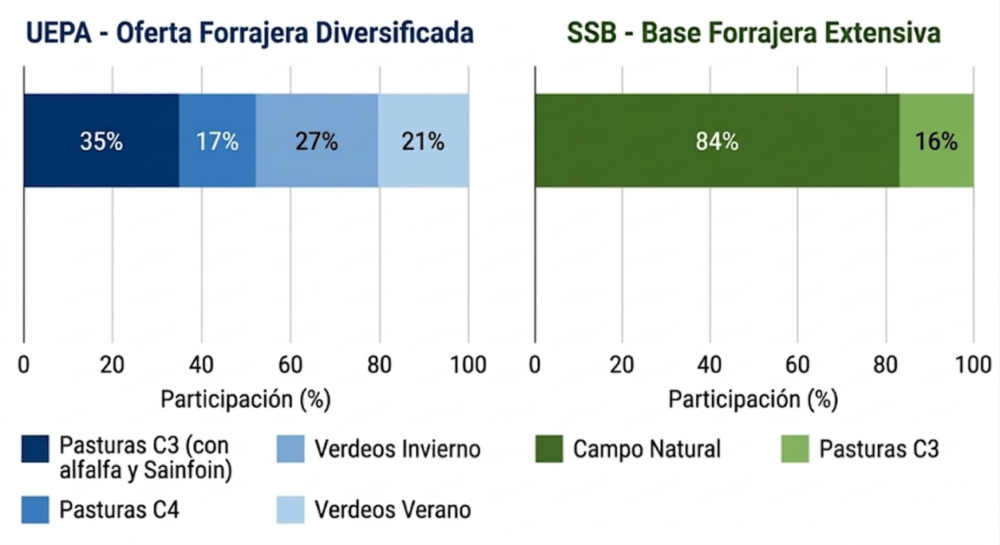
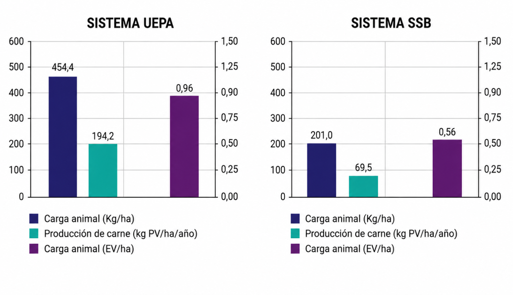

https://doi.org/10.56503/rimf/Vol.1(2026)/3716
Intensificación tecnológica y eficiencia económica en sistemas ganaderos subhúmedos: El modelo de la Estación Experimental Agropecuaria Bordenave (EEA) del Instituto Nacional de Tecnología Agropecuaria (INTA)
Technological Intensification and Economic Efficiency in Subhumid Livestock Systems: The Model of the Bordenave Agricultural Experimental Station (EEA) of the National Institute of Agricultural Technology (INTA)
Carlos Torres Carbonelli,iii. https://orcid.org/0000-0002-2978-4326
Andrea Bollettaii. https://orcid.org/0000-0003-4887-7592
Sebastián Lagrangeii. https://orcid.org/0000-0002-0886-9646
Maximiliano Alonsoii. https://orcid.org/0009-0006-7677-6149
Andrea Laurici. https://orcid.org/0009-0001-1286-4194
Gerónimo De Leoi. https://orcid.org/0009-0009-5276-6642
i Instituto Nacional de Tecnología Agropecuaria (INTA). Agencia Bahía Blanca, Estación Experimental Agropecuaria Bordenave. San Andrés 800, Campus de la Universidad Nacional del Sur (8000), Bahía Blanca, Provincia de Buenos Aires, Argentina. carbonell.carlos@inta.gob.ar; Lauric.andrea@inta.gob.ar; Deleo.geronimo@inta.gob.ar
ii Instituto Nacional de Tecnología Agropecuaria (INTA). Estación Experimental Agropecuaria Bordenave. km 36,5 Ruta Provincial 76, (8187) Bordenave, Provincia de Buenos Aires. Argentina. Bolletta.andrea@inta.gob.ar; Lagrange.sebastian@inta.gob.ar; maxijalonso@gmail.com
iii Departamento de Agronomía, Universidad Nacional del Sur. San Andrés 800, Campus de la Universidad Nacional del Sur (8000), Bahía Blanca, Provincia de Buenos Aires, Argentina. carbonell.carlos@inta.gob.ar
RESUMEN
La adopción diferencial de tecnologías en los sistemas ganaderos genera brechas productivas y económicas cuya cuantificación es esencial para orientar políticas sectoriales regionales. El objetivo de este trabajo fue evaluar los indicadores tecnológicos y económicos de un modelo de ciclo completo de alta tecnología en la Unidad Experimental de Producción Animal de la EEA INTA Bordenave y compararlo con el sistema representativo de la región subhúmeda del sudoeste bonaerense. La metodología se basó en estudio de caso con análisis de margen bruto bajo normas AACREA. Los resultados mostraron que la Unidad de INTA supera al sistema regional en producción de carne en un 129% y en margen bruto por hectárea en un 454%. La brecha se explica principalmente por la diversificación forrajera, que incluye gramíneas perennes y leguminosas de alto valor nutritivo como alfalfa y sainfoin, una carga de invernada 562% superior y ganancias diarias de peso 62% mayores. El análisis por tipo de desembolso revela que el resultado financiero operativo directo fue también superior en la Unidad del INTA (+398%), con una relación costo-ingreso que evidencia eficiencia en la dilución de costos fijos. Estos hallazgos confirman la hipótesis de que la intensificación tecnológica ajustada a las condiciones agroecológicas regionales constituye una estrategia viable para reducir la brecha entre el potencial productivo de la región y los sistemas predominantes.
Palabras clave: Ganadería bovina, intensificación tecnológica, brecha productiva y económica.
Código JEL: Q12
ABSTRAC
Differential technology adoption in livestock systems generates productive and economic gaps whose quantification is essential for guiding regional sectoral policies. This study aimed to evaluate the technological and economic indicators of a high-technology integrated cow-calf and pasture finishing model at the Beef Cattle Experimental Unit of INTA EEA Bordenave and compare it with the standard beef cattle system of the sub-humid region of southwest Buenos Aires Province. The methodology was based on a case study approach with gross margin analysis following AACREA standards. Results showed that the INTA Unit outperforms the regional beef cattle system in beef production by 129% and in gross margin per hectare by 454%. The gap is primarily explained by greater forage diversity, including perennial grasses and high-nutritional legumes such as alfalfa and sainfoin, stocking rate 562% higher at the stocker phase, and 62% greater average daily gains. Analysis by expenditure type reveals that financial result was also higher in the INTA Unit (+398%), with a cost-income ratio revealing efficiency in fixed cost dilution. These findings confirm the hypothesis that technological intensification, adapted to regional agroecological conditions, constitutes a feasible strategy for reducing gaps between regional productive potential and prevailing beef cattle production systems.
Key words: Beef cattle, technological intensification, productive and economic gap.
Código JEL: Q12
Recibido: 14/03/2026
Aceptado: 22/05/2026
Publicado: 30/06/2026
Introducción
La demanda global de proteína animal crecerá entre un 40% y un 57% hacia 2050 (Herrero et al., 2020), ejerciendo presión creciente sobre la capacidad productiva de los sistemas ganaderos extensivos. En Argentina, la ganadería bovina representa una actividad estructural del sector agropecuario con aproximadamente 54 millones de cabezas (Menchaca & Vieites, 2024), concentrada históricamente en la región pampeana. Sin embargo, el desplazamiento de la ganadería hacia zonas más marginales, consecuencia de la expansión agrícola, hace que regiones como el sudoeste bonaerense, caracterizadas por la escasez de precipitaciones y la alta variabilidad climática interanual, enfrenten el desafío de intensificar la producción en condiciones agroecológicas limitantes.
La gestión integrada de tecnologías forrajeras constituye una palanca central para mejorar la eficiencia de conversión y la rentabilidad de los sistemas ganaderos (Delevatti et al., 2019). Estudios en la región pampeana argentina señalan que el incremento en la carga animal soportado por una base forrajera diversificada genera efectos de dilución de costos fijos e incrementa el valor marginal del forraje incorporado (Bilotto et al., 2021). Paralelamente, la diversificación de actividades ganaderas entre cría, recría y ciclo completo ha demostrado reducir la variabilidad del retorno sobre el capital en contextos de alta incertidumbre climática y de precios (Pacín & Oesterheld, 2014; Bell et al., 2021).
A escala global, el modelo de intensificación sostenible representa el paradigma dominante para incrementar la producción por unidad de superficie sin ampliar la frontera ganadera (Romanzini et al., 2020; Lopes et al., 2020). En sistemas de pasturas perennes adaptadas de la región pampeana, la incorporación de leguminosas perennes, en particular especies con taninos condensados como el sainfoin (Onobrychis viciifolia), ha mostrado beneficios múltiples como una mayor tasa de digestión, aumento del consumo voluntario, mejora de las ganancias diarias de peso y reducciones de emisiones de metano entérico (Bolletta, 2020; Lagrange et al., 2020; MacAdam et al., 2024).
La cuantificación económica rigurosa de estas brechas tecnológicas en contextos regionales específicos es aún escasa en la literatura nacional. Los estudios comparativos de Margen Bruto (MB) que integren análisis de costos por tipo de desembolso y por función productiva, siguiendo metodologías estandarizadas AACREA/INTA, son una herramienta indispensable para traducir los avances técnicos en señales concretas para la toma de decisiones empresarial y la formulación de políticas sectoriales agrarias y de la extensión (Ghida Daza et al., 2009).
La hipótesis de este trabajo postula que la implementación de un modelo de ciclo completo de alta tecnología, ajustado a las condiciones agroecológicas del sudoeste bonaerense, genera mejoras significativas y cuantificables en rentabilidad y eficiencia respecto al sistema regional predominante. El objetivo es evaluar los indicadores productivos y económicos de la Unidad Experimental de Producción Animal de la EEA INTA Bordenave y compararlos con el modelo representativo del Sistema Subhúmedo, identificando los factores de mayor impacto diferencial.
Marco Teórico
La empresa agropecuaria enfrenta decisiones de asignación de recursos bajo condiciones de incertidumbre climática, tecnológica y de mercado. En este contexto, el análisis de MB constituye el instrumento de gestión más utilizado en empresas ganaderas argentinas para evaluar la rentabilidad de actividades y sistemas productivos (Frank, 1995; González & Pagliettini, 2001). El MB representa la diferencia entre los ingresos netos y los costos directos de producción, y permite comparar sistemas de diferente escala sobre una base normalizada por unidad de superficie.
La literatura internacional sobre intensificación ganadera muestra que la relación entre carga animal, base forrajera y resultado económico no es lineal. Romanzini et al. (2020), en un estudio de evaluación económica de sistemas con intensificación creciente en pasturas tropicales de Brasil, encontraron que el aumento en la producción de carne por hectárea se traslada de manera no proporcional al margen neto, dado que los costos erogables crecen a una tasa mayor que los ingresos en los tramos de mayor intensificación. En contrapartida, Lopes et al. (2020) y Bilotto et al. (2021) señalan que la incorporación de forrajes de alta calidad genera un efecto de dilución de costos de mantenimiento del rodeo que puede superar dicho efecto de compresión de márgenes.
La diversificación de la base forrajera es reconocida como una estrategia de reducción de riesgo productivo y climático. Bell et al. (2021), en un análisis de 78 explotaciones mixtas de la región pampeana australiana, demostraron que los sistemas con mayor diversificación de cultivos forrajeros presentan coeficientes de variación del retorno sobre el capital significativamente menores que los sistemas especializados. Este efecto se potencia cuando la diversificación incluye especies de diferente estacionalidad, como la combinación de pasturas de fotosíntesis C3 y C4, y verdeos de invierno y verano.
En el ámbito específico de las leguminosas forrajeras, la inclusión de especies con taninos condensados como el sainfoin (Onobrychis viciifolia) ha recibido atención creciente por sus efectos sobre la reducción de la incidencia del timpanismo espumoso, la eficiencia de utilización del nitrógeno y sobre el desempeño animal (Guevara, 2019; Lagrange y Villalba, 2019; Villalba et al., 2019). Schaub et al. (2020) encontraron en pasturas semi-naturales de Europa que el incremento de la diversidad vegetal se asoció con mayor calidad forrajera y mayor estabilidad del rendimiento interanual, con implicancias económicas positivas para los productores.
La inclusión de sainfoin en pasturas de alfalfa (Medicago sativa) podría mejorar la eficiencia de utilización de la proteína a nivel ruminal de esta última, ya que el consumo de sainfoin reduce las excreciones de nitrógeno urinario en bovinos (Lagrange et al., 2020). Por otro lado, las ganancias diarias de peso de vaquillonas pastoreando leguminosas con taninos condensados como sainfoin y Lotus corniculatus fueron un 40% mayores que las de aquellas pastoreando alfalfa en monocultivo (1,05 vs. 0,74 kg/día), y la combinación en pastoreo de tres leguminosas distintas produjo ganancias aún superiores (1,21 kg/día) con consumos 33% mayores (Lagrange et al., 2021).
En cuanto a los modelos de clasificación de costos, la metodología que distingue entre costos erogables, contables y económicos siguiendo la tipología de Espósito (1995) y González & Pagliettini (2001), permite identificar con precisión el resultado financiero operativo disponible para el servicio de deudas y la remuneración del capital propio, diferenciándolo del resultado económico que incluye los costos de oportunidad de los activos inmovilizados. Esta distinción es relevante para la gestión de empresas con diferentes estructuras de financiamiento y acceso al crédito (Frank, 1995).
Metodología
El presente estudio adoptó un enfoque de estudio de caso comparativo (Castro-Monge, 2010), aplicando técnicas de análisis y modelado de escenarios bajo metodologías estandarizadas por el Área de Economía y Sociología del INTA (Ghida Daza et al., 2009) y las normas AACREA (1990).
Sistemas productivos analizados:
Se contrastaron los siguientes dos modelos ganaderos de ciclo completo representativos de la región subhúmeda del sudoeste de Buenos Aires (precipitaciones medias: 600–800 mm, con alta variabilidad interanual; Scian et al., 2006).
1. Unidad Experimental de Producción Animal del INTA EEA Bordenave (UEPA): ubicada en el sector norte del Partido de Puán. Los indicadores corresponden al ejercicio real 2022/23, sistematizados a partir de registros productivos, comerciales y contables de la Unidad.
2. Sistema representativo de la región Subhúmeda del Sudoeste Bonaerense (SSB): modelo sistematizado y utilizado por la Secretaría de Bioeconomía del Ministerio de Economía para los estudios ganaderos de la República Argentina (Vidal & Moares, 2024).
Determinación del margen bruto y sus componentes
El MB se determinó según la ecuación:
(1)
donde IN representa los Ingresos Netos y CD los Costos Directos totales. Los IN se calcularon como:
2)
(3)
(4)
siendo IV los ingresos por ventas netos de gastos de comercialización (GC), EC los egresos por compras, C el valor de las compras, y DI la variación de inventario ganadero.
Los CD se segregaron en tres componentes: (a) gastos directos erogables (alimentación, sanidad, mano de obra directa); (b) amortizaciones directas calculadas por el método lineal según vidas útiles de Frank (1995); y (c) intereses directos como costo de oportunidad del capital directo, aplicando tasas del 8% para activos fijos y del 10% para capital circulante (González & Pagliettini, 2001).
El análisis se realizó a precios corrientes expresados en dólares estadounidenses (USD) según tipo de cambio vendedor del Banco de la Nación Argentina del 31/01/2026 ($ 1.415/USD). Esta decisión metodológica permite atenuar el efecto distorsivo de la inflación argentina sobre los valores absolutos en moneda local y facilita la comparación con la literatura internacional. Los costos se clasificaron adicionalmente por: (a) funciones de producción y comercialización, y (b) tipo de desembolso, erogables, contables y económicos, siguiendo la tipología de Espósito (1995).
Resultados
El análisis de la composición de la oferta forrajera revela diferencias estructurales sustantivas entre ambos sistemas (Figura 1). La UEPA presenta una base forrajera diversificada, con cuatro tipos de recursos complementarios, dados por pasturas perennes C3 (35%, gramíneas, alfalfa y sainfoin), pasturas perennes C4 (17%), verdeos de invierno (27%) y verdeos de verano (21%). La cobertura de doble cultivo alcanza el 27,1% de la superficie (26,4 ha sobre 97,5 ha totales). El SSB, en cambio, se apoya en un 84% de campo natural y sólo un 16% de pasturas perennes C3 sembradas.
Esta configuración en la UEPA refleja la estrategia de asegurar oferta forrajera de calidad en todas las estaciones del año, clave para sostener altas tasas de ganancias diarias en la invernada (Soder et al., 2007; Schaub et al., 2020). La inclusión de sainfoin, leguminosa con taninos condensados introducida desde Canadá hace unos años en EEA INTA Bordenave y evaluada consistentemente, representa una innovación de alto potencial para la región, dado que su perfil bioquímico mejora la eficiencia de utilización del nitrógeno ruminal y reduce las pérdidas de N al ambiente (Bolletta, 2020; Lagrange et al., 2020; MacAdam et al., 2024).
Fuente: elaboración propia

Figura 1. Composición porcentual de la oferta forrajera por sistema productivo
Tabla 1. Indicadores tecnológico-productivos comparativos UEPA y SSB
| Indicador | UEPA | SSB |
|---|---|---|
| Superficie total (ha) | 97,5 | 2.100 |
| Superficie en doble cultivo (ha) | 27,5 | 0,0 |
| Superficie trabajada Total (ha) | 125 | 2100 |
| Carga vientres (EV ha⁻¹) | 0,63 | 0,51 |
| Tasa de destete (%) | 87 | 75 |
| Edad 1° servicio (meses) | 15 | 24 |
| Reposición (%) | 20 | 19 |
| Carga invernada (EV ha⁻¹) | 0,33 | 0,05 |
| GDP promedio invernada (kg cab⁻¹ día⁻¹) | 0,808 | 0,500 |
| Tiempo terminación machos (meses) | 12 | 20,4 |
| Producción de carne (kg PV ha⁻¹ año⁻¹) | 194,2 | 69,5 |
| Carga animal total (EV ha⁻¹) | 0,96 | 0,56 |
Fuente: Elaboración propia.
Perfil tecnológico comparado
La Figura 2 sintetiza el perfil diferencial de ambos sistemas en cuatro indicadores clave de productividad y escala. El sistema UEPA supera al SSB en todos los ejes de productividad. La carga animal es sustancialmente mayor, tanto en stock físico (454,4 vs. 201,0 kg/ha) como en términos de equivalencias nutricionales ganaderas (0,96 vs. 0,56 EV/ha), lo que representa una capacidad de carga un 71% superior. Esta mayor carga y análogamente presión de pastoreo se traduce en una producción de carne marcadamente más alta, alcanzando los 194,2 kg/ha/año frente a los 69,5 kg del sistema SSB (+179%). Asimismo, el cálculo de la eficiencia de stock alcanza una mejora del 23% de 35 a 43 kg/ha. Esto sugiere que la palanca principal de diferenciación reside en la mayor receptividad y aprovechamiento de la base forrajera intensificada del sistema UEPA, permitiendo una extracción de carne altamente superior por cada kilo de animal mantenido en el campo.
Fuente: elaboración propia.
|

Figura 2. Perfil comparativo de indicadores tecnológico-productivos de ambos sistemas
Resultados económicos
La Tabla 2 presenta los resultados económicos de ambos sistemas. El MB de la UEPA fue de USD 490,6 ha⁻¹, un 454% superior al del SSB (USD 88,5 ha⁻¹). Esta brecha de mayor magnitud respecto a ejercicios anteriores refleja tanto los cambios en precios relativos de insumos y productos actualizados a Enero 2026, como la diferente estructura de intensificación de ambos sistemas. El ingreso neto por hectárea de la UEPA (USD 762,4) superó al SSB (USD 199,3) en un 283%, mientras que los costos directos por hectárea de la UEPA (USD 271,8) resultaron un 145% mayores. La notable expansión del diferencial de margen frente al diferencial de costos explica la alta rentabilidad relativa del sistema intensivo en el contexto de precios vigente, muy superiores a los de los ejercicios anteriores a 2025 (Vidal & Moares, 2025).
Tabla 2. Margen bruto para los dos sistemas estudiados
| Componente | UEPA Total (USD) | SSB Total (USD) | UEPA (USD ha⁻¹) | SSB (USD ha⁻¹) |
|---|---|---|---|---|
| Ingresos Netos | 95.306 | 418.549 | 762,4 | 199,3 |
| Gastos Directos | 16.627 | 102.473 | 133,0 | 48,8 |
| Amortizaciones Directas | 2.858 | 9046 | 22,9 | 4,3 |
| Intereses Directos | 14.495 | 121.233 | 116,0 | 57,7 |
| Costos Directos Totales | 33.979 | 232.753 | 271,8 | 110,8 |
| MARGEN BRUTO | 61.327 | 185.796 | 490,6 | 88,5 |
Fuente: Elaboración propia.
Estructura de ingresos
El análisis de los ingresos brutos por categoría (Tabla 3) revela que la UEPA concentra en un 65% del total su ingreso en la venta de novillos (USD 601 ha⁻¹), seguido por toros refugo (USD 85,2 ha⁻¹) y el refugo del sistema (USD 117,4 ha⁻¹). El SSB, por su parte, presenta los novillos como principal ingreso en un 46% del total (USD 99,2 ha⁻¹), seguido con una participación significativa del refugo del sistema (USD 42,5 ha⁻¹) y de los vientres vacíos/CUT (USD 39,5 ha⁻¹). Cabe señalar que la UEPA incorpora una pequeña entrada por grano de cebada (USD 12,8 ha⁻¹), propia de su sistema de doble cultivo, ausente en el SSB. El ingreso bruto total por hectárea de la UEPA (USD 927,1) es un 424% del mismo para SSB.
Tabla 3. Estructura de ingresos brutos por categoría de los sistemas estudiados
| Categoría / Producto | UEPA (USD ha⁻¹) | % total UEPA | SSB (USD ha⁻¹) | % total SSB |
|---|---|---|---|---|
| Novillos | 601 | 65% | 99,2 | 46% |
| Refugo del sistema | 117,4 | 13% | 42,5 | 20% |
| Toros refugo | 85,2 | 9% | 3,0 | 1% |
| Vaquillonas | 81,9 | 9% | 33,2 | 15% |
| Vientres vacíos/CUT | 32,2 | 3% | 39,5 | 18% |
| Grano de cebada (UEPA) | 12,8 | 1% | — | — |
| TOTAL INGRESOS BRUTOS | 927,1 | 100% | 217,4 | 100% |
Fuente: Elaboración propia.
4.2.2 Análisis de costos por funciones
La Tabla 4 presenta la descomposición de los costos directos por función productiva. En la UEPA, el rubro rodeos, que incluye la compra de animales externos para invernada (USD 126,1 ha⁻¹) y los costos de oportunidad del rodeo propio, representa el 64% de los costos de producción directos (USD 254,2 ha⁻¹). La alimentación explica el 25% (USD 99,2 ha⁻¹), con verdeos de invierno (USD 38,8), verdeos de verano (USD 25,8) y suplementación estratégica (USD 25,9) como sus principales componentes. En el SSB, el campo natural (USD 30,3 ha⁻¹) representa el 91% del costo de alimentación (USD 33 ha⁻¹ en total), y el rubro rodeos (USD 58,4 ha⁻¹), dominado por los costos de oportunidad del rodeo reproductor, es el componente de mayor peso.
Tabla 4. Costos directos por función de ambos sistemas
| Rubro | UEPA (USD ha⁻¹) | SSB (USD ha⁻¹) |
|---|---|---|
| Alimentación | 99,2 | 33 |
| Verdeos de Verano | 25,8 | — |
| Verdeos de Invierno | 38,8 | — |
| Campo Natural | — | 30,3 |
| Suplementos | 25,9 | — |
| Rodeos (compras + stock reproductivo) | 254,2 | 58,4 |
| Compras animales invernada | 126,1 | — |
| COP fijo vientres | 52,1 | 27,5 |
| Mano de Obra Directa | 34,5 | 12,3 |
| Sanidad | 10 | 7,.1 |
| Costos de Comercialización | 38,6 | 18,1 |
| TOTAL COSTOS DIRECTOS | 271.8 | 110.8 |
Fuente: Elaboración propia.
4.2.3 Análisis por tipo de desembolso
La Tabla 5 presenta la clasificación por tipo de desembolso. El resultado financiero operativo directo, deduciendo únicamente los costos erogables (gastos directos erogables y costos de comercialización erogables, fue un 398% superior en UEPA. Esta diferencia de casi cuatro veces refleja la muy superior capacidad de generación de flujo de caja de la UEPA por unidad de superficie, en un contexto donde los precios de la hacienda en Enero 2026 son significativamente más altos en relación con los costos de insumos (Vidal & Moares, 2025). El resultado contable operativo directo, incorporando amortizaciones, fue de USD 738,2 vs. USD 148,6 ha⁻¹ en SSB (+397%). Luego de imputar los costos de oportunidad del capital expresados como intereses directos dados (USD 116 ha⁻¹ en UEPA vs. USD 57,7 ha⁻¹ en SSB), el resultado económico operativo de UEPA fue un 454% superior al de SSB, análogamente con el MB.
Tabla 5. Clasificación por tipo de desembolso por sistema
| Componente | UEPA (USD ha⁻¹) | SSB (USD ha⁻¹) |
|---|---|---|
| Total Ingresos Brutos por producción | 927,1 | 217,4 |
| Costos erogables (producción + comercialización) | 166,0 | 64,5 |
| RESULTADO FINANCIERO OPERATIVO DIRECTO | 761,1 | 152,9 |
| Amortizaciones/depreciaciones directas | 22,9 | 4,3 |
| RESULTADO CONTABLE OPERATIVO DIRECTO | 738,2 | 148,6 |
| Costos implícitos (intereses + costo de oportunidad) | 116,0 | 57,7 |
| RESULTADO ECONÓMICO OPERATIVO DIRECTO | 490,6 | 88,5 |
Fuente: Elaboración propia.
4.2.4 Comparación de eficiencia económica
A partir de los resultados hallados en cuanto a los principales indicadores de eficiencia económica se destaca como la UEPA muestra ventajas en todos los indicadores de resultado absoluto: MB y resultado económico operativo directo (+454%), resultado financiero operativo (+398%), ingreso neto por hectárea (+283%). Los costos directos por hectárea se incrementan en un 145%. No obstante, la relación MB/Ingreso Neto de la UEPA (0,643) también es superior a la del SSB (0,444), indicando que la UEPA no sólo genera un mayor MB absoluto sino también una mejor conversión de ingresos en margen. La equivalencia productiva resulta en que 1 ha de UEPA produce el equivalente económico de 5,54 ha de SSB, lo que expresa la notable ventaja de la intensificación tecnológica en el contexto de precios de Enero 2026.
Discusión
Los resultados confirman y amplían la hipótesis del trabajo en el contexto de precios de Enero 2026. El diferencial de producción de carne por hectárea de 129% entre la UEPA y el SSB se traduce en una brecha de MB de 454%, significativamente superior a la brecha documentada en ejercicios previos con precios de 2024 (Torres Carbonell et al., 2024). Este comportamiento indica que la actualización de precios, en un contexto de aumento relativo de los precios de la hacienda respecto a los costos de insumos en dólares (Vidal y Moares, 2025), amplificó la ventaja del sistema más intensivo, que posee mayor exposición a precios de venta.
La palanca principal de diferenciación sigue residiendo en la componente de invernada: la carga 6,6 veces superior y las GDP 62% mayores en la UEPA son consecuencia directa de la base forrajera diversificada y de mayor adaptación a las condiciones agroecológicas de sudoeste subhúmedo bonaerense. En términos de flujo de caja, el resultado financiero operativo directo de USD 761,1 ha⁻¹ para la UEPA implica que por cada dólar de insumo erogable invertido, el sistema genera USD 4,58 de retorno financiero, frente a USD 2,37 en el SSB. Este diferencial es especialmente relevante para la toma de decisiones de inversión en un contexto de acceso limitado al crédito.
La ratio MB/Ingreso neto muestra que la UEPA retiene una mayor proporción de sus ingresos como margen económico, a diferencia de lo observado en análisis con precios de períodos anteriores donde los costos de invernada comprimían el margen relativo. Esto sugiere que, en el contexto de precios de Enero 2026, con precios de la hacienda más altos en dólares, el efecto precio supera al efecto costo en los sistemas de mayor intensificación.
Desde el punto de vista de la extensión tecnológica, la equivalencia de 1 ha UEPA = 5,54 ha SSB tiene implicancias estratégicas contundentes para establecimientos con restricciones de superficie en el sudoeste bonaerense. La diversificación forrajera que incluye sainfoin, con sus beneficios documentados sobre GDP (Lagrange et al., 2021) y reducción de metano entérico (Chung et al., 2013), se consolida como una tecnología de alto impacto productivo y económico. En términos de robustez ante cambios de precios relativos, el análisis de sensibilidad de ±30% (Tabla 6) confirma que la superioridad económica de la UEPA se mantiene en todos los escenarios evaluados, en línea con la mayor estabilidad del retorno sobre el capital, documentada por Pacín y Oesterheld (2014) para sistemas diversificados pampeanos y por Bell et al. (2021) en sistemas mixtos australianos. Ante una caída del 30% en el precio de la hacienda, el MB de la UEPA (USD 212,5 ha⁻¹) supera en 9,1 veces al del SSB (USD 23,3 ha⁻¹). Un incremento del 30% en costos de insumos reduce el MB de la UEPA en un 10,2%, frente al 21,8% del SSB, evidenciando mayor resiliencia relativa del sistema intensivo ante shocks de costos, consistente con los efectos de dilución de costos fijos descriptos por Bilotto et al. (2021) y con el comportamiento no lineal entre intensificación y margen señalado por Romanzini et al. (2020). Asimismo, Lopes et al., (2020) documentan que la incorporación de forrajes de alta calidad genera un efecto de dilución de costos de mantenimiento del rodeo que puede superar el efecto de compresión de márgenes. La diferencia de escala entre la UEPA (97,5 ha) y el SSB (2.100 ha) constituye una limitación del análisis. Las economías de escala en la adquisición de insumos y la gestión del riesgo financiero merecen ser exploradas en futuros trabajos, junto con la sensibilidad de los resultados a diferentes escenarios de precios relativos.
6. Conclusiones
1. La UEPA de la EEA INTA Bordenave demostró un desempeño superior al SSB en todos los indicadores productivos evaluados: a) producción de carne (+129%); b) carga animal total (+71%) y c) eficiencia de stock (+22%). La base forrajera diversificada, pasturas perennes C3 con alfalfa y sainfoin, pasturas perennes C4 y verdeos de dos estaciones, es el factor determinante, al sostener una carga de invernada 6,6 veces superior y GDP 62% mayores.
2. El MB de la UEPA fue de USD 490,6 ha⁻¹, un 454% superior al SSB (USD 88,5 ha⁻¹). El ingreso neto por hectárea fue un 283% mayor con costos directos un 145% superiores, operando un fuerte mecanismo de dilución de costos fijos que amplifica la ventaja del sistema intensivo en el contexto de precios de Enero 2026.
3. La relación MB/Ingreso neto fue superior en la UEPA en un 45%, indicando que en ésta se convierte una mayor proporción de sus ingresos en margen económico. El resultado financiero operativo directo fue un 398% mayor, reflejando una capacidad de generación de caja por unidad de superficie muy superior.
4. La equivalencia productiva de 1 ha UEPA = 5,54 ha SSB tiene implicancias directas para la gestión de empresas con restricciones de superficie, constituyendo la intensificación tecnológica un mecanismo de expansión virtual de la base productiva regional del sudoeste bonaerense. Este aspecto es esencialmente relevante para las estrategias de la componente del INTA de Extensión y Transferencia al contar con modelos reales para la promoción y adopción de prácticas de manejo que permitan aumentar la eficiencia en el uso de los recursos disponibles, mejorar la productividad por unidad de superficie y fortalecer la competitividad económica de los sistemas ganaderos regionales, especialmente en contextos de alta variabilidad climática y restricciones estructurales propias del territorio.
5. El análisis de sensibilidad ante variaciones de ±30% en los precios relativos confirma la robustez del diferencial económico. En todos los escenarios evaluados la UEPA mantiene un MB superior al del SSB, con mayor resiliencia relativa ante shocks de costos. La relación MB/Capital Invertido (0,433 en UEPA vs. 0,136 en SSB) cuantifica la viabilidad económico-financiera de la intensificación. En futuros trabajos se propone explorar la escalabilidad a establecimientos de mayor superficie, la evaluación del resultado neto sobre el capital total y la huella de carbono como externalidad ambiental del sistema.
Agradecimientos
Los autores agradecen al personal técnico y de campo de la EEA INTA Bordenave por la colaboración en la sistematización de los registros productivos de la UEPA.
Referencias bibliográficas
- Asociación Argentina de Consorcios Regionales de Experimentación Agrícola (AACREA). (1990). Normas para medir los resultados económicos en las empresas agropecuarias. Buenos Aires: Ed. AACREA.
- Bell, L. W., Moore, A. D., & Thomas, D. T. (2021). Diversified crop-livestock farms are risk-efficient in the face of price and production variability. Agricultural Systems, 189, 103050. https://doi.org/10.1016/j.agsy.2021.103050
- Bell, L. W., Moore, A. D., & Thomas, D. T. (2018). Integrating diverse forage sources reduces feed gaps on mixed crop-livestock farms. Animal, 12(9), 1967–1980. https://doi.org/10.1017/S1751731117003196
- Bilotto, F., Vibart, R., Wall, A., & Machado, C. (2021). Estimation of the inter-annual marginal value of additional feed and its replacement cost for beef cattle systems in the Flooding Pampas of Argentina. Agricultural Systems, 187, 103010.
- Bolletta, A. I. (2020). Enhancing the production and sustainability of pasture-fed beef using non-traditional legume forages. PhD Thesis, Utah State University.
- Bottaro, O. E., Rodríguez Jáuregui, H., & Yardín, A. (2004). El comportamiento de los costos y la gestión de la empresa. Buenos Aires: Editorial La Ley.
- Castro-Monge, E. (2010). El estudio de casos como metodología de investigación. Revista Nacional de Administración, 1(2), 31–54.
- Christensen, K., Pitcher, R. L. & Bolletta, A. I. (2024). Tannins in Perennial Legume and Forb Functional Forages. IGC Proceedings, 42.
- Chung, Y. H., McGeough E. J., Acharya S., McAllister T. A., McGinn S. M., Harstad O. M., & Beauchemin K.A. (2013). Enteric methane emission, diet digestibility, and nitrogen excretion from beef heifers fed sainfoin or alfalfa. J. Anim. Sci. 91:4861–4874. doi:10.2527/jas.2013-6498
- Delevatti, L., Romanzini, E., Koscheck, J., Renesto, T., Ferrari, D., Barbero, A., Mulliniks, R., & Reis, R. (2019). Forage management intensification and supplementation strategy. Animal Feed Science and Technology, 247, 74–82.
- Espósito, W. (1995). Introducción al estudio de la contabilidad de costos. En C. M. Giménez (Ed.), Costos para empresarios. Buenos Aires: Ediciones Macchi.
- Frank, R. G. (1995). Introducción al cálculo de costos agropecuarios. Buenos Aires: Editorial El Ateneo.
- Ghida Daza, C., et al. (2009). Indicadores económicos para la gestión de empresas agropecuarias. Bases metodológicas. Buenos Aires: INTA.
- González, M. C., & Pagliettini, L. L. (2001). Los costos agrarios y sus aplicaciones. Buenos Aires: Facultad de Agronomía, UBA.
- Guevara Ballesteros, R. D. (2019). Enteric Methane and Nitrogen Emissions in Beef Cattle Grazing a Tannin-containing Legume Relative to Feedlot and Traditional Pasture-based Production Systems. Master's Thesis, Utah State University.
- Herrero, M., Thornton, P. K., (2010). Smart investments in sustainable food production: revisiting mixed crop-livestock systems. Science, 327(5967), 822–825.
- Herrero, M., Mason-D'Croz, D.,. (2020). Livestock and sustainable food systems: Status, trends, and priority actions. One Earth, 3(5), 573–586.
- Kachergis, E., Derner, J., (2014). Increasing flexibility in rangeland management during drought. Ecosphere, 5(6), 1–14.
- Lagrange, S. P., & Villalba, J. J. (2019). Tannin-containing legumes and forage diversity influence foraging behavior, diet digestibility, and nitrogen excretion by lambs. Journal of Animal Science, 97(9), 3994-4009. doi: 10.1093/jas/skz246
- Lagrange, S. P., Beauchemin, K. A., MacAdam, J. W., & Villalba, J. J. (2020). Grazing diverse combinations of tanniferous and non-tanniferous legumes: implications for beef cattle performance and environmental impact. Science of The Total Environment, 746, 140788. https://doi.org/10.1016/j.scitotenv.2020.140788
- Lagrange, S. P., MacAdam, J. W., Stegelmeier, B., & Villalba, J. J. (2021). Grazing diverse combinations of tanniferous and nontanniferous legumes. Journal of Animal Science, 99(11), skab291. https://doi.org/10.1093/jas/skab291
- Lopes, M. A., dos Santos, G., Lima, A. L. R., Carvalho, F. M., & Cardoso, M. G. (2020). Assessment of production costs and revenue in a beef cattle production system in Brazil. Ciência e Agrotecnologia, 44, e023320.
- MacAdam, J. W., Villalba, J. J., Lagrange, S. P., Stewart, E., Hunt, S., Legako, J., Menchaca, M. A., & Vieites, C. (2024). Ganadería bovina en Argentina: diagnóstico, perspectivas y desafíos. Revista Argentina de Producción Animal, 44(1), 1–18.
- Pacín, F., & Oesterheld, M. (2014). In-farm diversity stabilizes return on capital in Argentine agro-ecosystems. Agricultural Systems, 124, 51–59.
- https://www.sciencedirect.com/science/article/abs/pii/S0308521X13001327
- Romanzini, E. P., Barbero, R. P., & Reis, R. A. (2020). Economic evaluation from beef cattle production industry with intensification in Brazil's tropical pastures. Tropical Animal Health and Production, 52, 2659–2666.
- Schaub, S., Finger, R., et al. (2020). Plant diversity effects on forage quality, yield and revenues of semi-natural grasslands. Nature Communications, 11, 768.
- Scian, B., Labraga, J. C., Reimers, W., & Frumento, O. (2006). Characteristics of large-scale atmospheric circulation related to extreme monthly rainfall anomalies in the Pampa Region. Theoretical and Applied Climatology, 85(1–2), 89–106.
- Soder, K. J., Rook, A. J., Sanderson, M. A., & Goslee, S. C. (2007). Interaction of plant species diversity on grazing behavior and performance of livestock grazing temperate region pastures. Crop Science, 47(2), 416–425.
- Torres Carbonell, C., Chimeno, P., et al. (2022). Impacto de niveles crecientes de suplementación en la invernada de terneros. Revista Argentina de Economía Agraria, 23(1), 43–59.
- Torres Carbonell, C., Bolletta, A., Lagrange, S., Alonso, M., Lauric, A., & De Leo, G. (2024). Estudio económico del modelo de la Unidad de Producción Ganadera de la EEA Bordenave. 54° Reunión Anual Asociación Argentina de Economía Agraria.
- Vidal, R., & Moares, J. (2025). Resultados económicos ganaderos. Informe trimestral N°53. Secretaría de Bioeconomía, Ministerio de Economía de la República Argentina.
- Villalba, J. J., Beauchemin, K. A., Gregorini, P., & MacAdam, J. W. (2019). Pasture chemoscapes and their ecological services. Translational Animal Science, 3(2), 829-841. doi: 10.1093/tas/txz003